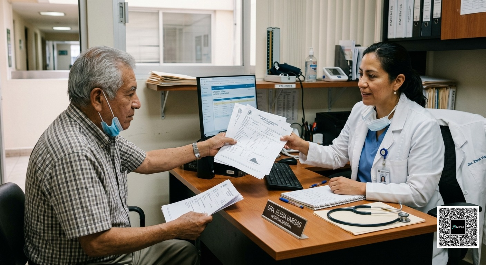
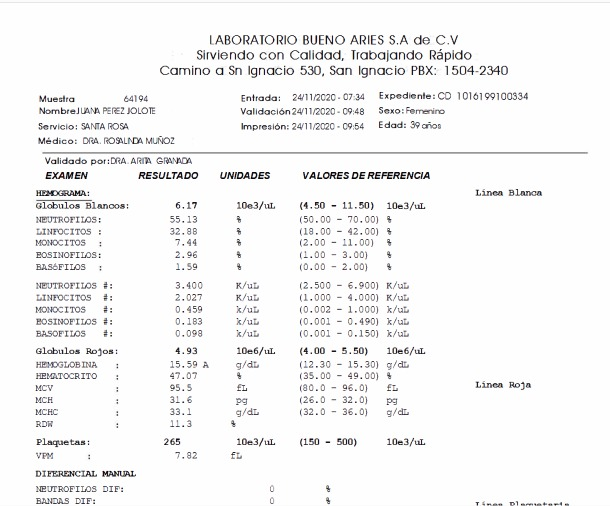
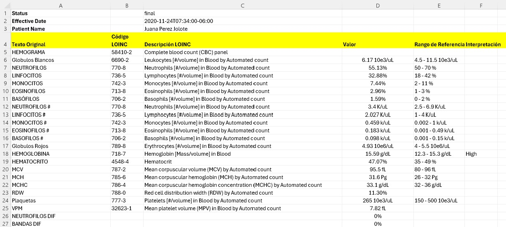

Physicians & practices
Convert incoming laboratory reports into usable data and reduce repetitive capture across clinical and administrative teams.
Clinical Data Ingestion Engine
Turn laboratory reports and unstructured clinical documents into normalized, machine-readable healthcare data.
Less manual data entry. More time for care.
A foundation for connected clinical workflows.
Working laboratory ingestion MVP · Built with Gemini 2.5 Flash
Interactive front-end preview · Connected to live extraction engine
01 / The problem
Patients still bring printed laboratory results to their appointments. Critical clinical information remains trapped on paper, in PDFs and in scanned reports from multiple laboratories.
The time and effort physicians and their assistants spend on manual capture is invaluable and could be better devoted to patient care. Manual transcription is also inherently prone to human error.

Repetitive capture and transcription add work for physicians and their teams.
Manual copying creates opportunities for missing or incorrectly entered information.
Different layouts and reporting conventions delay usable, structured clinical data.
02 / The solution
CDIE uses AI to identify, extract and structure clinical information. Laboratory observations can be normalized and mapped to LOINC, where applicable, while retaining original values for traceability.
PDF / Scan
Laboratory reports
Tests, results, units
Multimodal understanding
Standard terminology
Mapping where applicable
Quality checks
Source traceability
CSV / Excel · JSON
API in development
Pipeline overview. Expanded validation and confidence scoring are in development; interoperability integrations are on the roadmap.
03 / Working MVP
The current MVP focuses on laboratory data ingestion: values, units, reference ranges, normalization and LOINC mapping, with original-source traceability.


Actual MVP screenshots supplied by the founders. These examples contain patient identifiers; replace with de-identified copies before public publication.
04 / AI at the core
AI is part of CDIE’s core architecture.
Laboratories use different layouts, terminology and reporting conventions. CDIE combines multimodal document understanding with normalization and validation to transform those heterogeneous inputs into structured clinical observations.
Multimodal document understanding and clinical data extraction, combined with normalization and source traceability.
Evaluate healthcare-focused models for extraction, validation and clinical understanding as the platform evolves.
05 / Built for healthcare
Convert incoming laboratory reports into usable data and reduce repetitive capture across clinical and administrative teams.
Build a foundation for standardized clinical information across document-based workflows.
Planned API access will bring document ingestion and normalization into existing platforms and applications.
Business model
CDIE is being built as a SaaS platform for individual physicians and healthcare organizations, with API access planned for platforms and enterprise customers.
Usage-based and monthly subscription options are under evaluation. Pricing and processing limits have not yet been finalized.
06 / Product roadmap
Today’s laboratory ingestion MVP is the starting point for a broader clinical document intelligence platform.
07 / About CDIE
CDIE — Clinical Data Ingestion Engine — is a healthcare technology startup building the infrastructure that turns human-readable clinical documents into machine-readable clinical data.
Based in Mexico City, Mexico, our mission is to eliminate unnecessary manual clinical data capture and make information usable by physicians, healthcare organizations and digital systems.
Co-Founder
Technology executive with CIO experience leading digital transformation across healthcare, banking, government and education. A computer engineering graduate of ITAM, Luis Ángel brings a cross-sector perspective on making technology serve real operational needs.
LinkedIn ↗Co-Founder
Systems engineer with more than 10 years of software development experience and a background in Python solution architecture. Jose Luis brings software engineering and architecture expertise to CDIE.
LinkedIn ↗Let’s make clinical data usable
Test the live extraction engine with a laboratory report in PDF or image format.